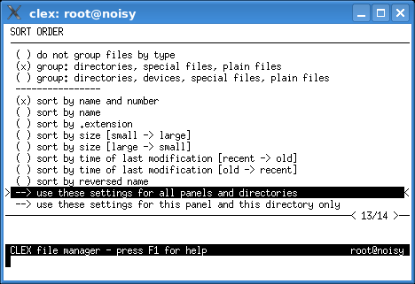

The sort order affects only the way the filenames are displayed.
You can set the sort order for the current panel and the current directory only or you can set the global sort order for all panels and directories. The global settings are retained between sessions.
On the top of the panel there are settings for hidden files processing. Hidden files can be
excluded from the file list if it is desired. A special setting hides them in the user's home
directory only, because they traditionally tend to clutter mainly the home directory.
A reminder HIDDEN is displayed at the lower right panel corner when such
files exist in a directory, but they are excluded from the panel.
Files are first grouped and then the groups are sorted. If grouping is enabled, CLEX will group files of the same type together. Files will be displayed in this order:
Files within a group are sorted using the order selected from the menu.

ls command).
This naming convention is the only difference between normal and hidden files.
sort by extension (by filename suffix) considers a file named .file
to be a hidden file without an extension.
sort by reversed name option is useful in sendmail queue
directories where files like qf1234, df1234,
and xf1234 belong together.